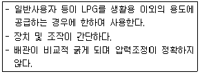
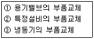
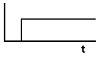
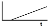
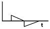
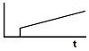
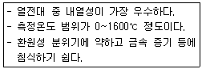

가스산업기사 (2010-03-07 기출문제)
1과목: 연소공학
1. 다음 중 증기의 상태 방정식이 아닌 것은?
- van der Waals식
- Lennard-Jones식
- Clausius식
- Berthelot식
(정답률: 67%)

2. 완전기체에서 정적비열(Cv), 정압비열(Cp)의 관계식을 옳게 나타낸 것은? (단, R은 기체상수이다.)
- Cp / Cv = R
- Cp - Cv = R
- Cv / Cp = R
- Cp ＋ Cv = R
(정답률: 84%)
3. 다음 중 연료비에 관한 공식이 올바른 것은?
- 고정탄소 / 휘발분
- (1 - 고정탄소) / 휘발분
- 휘발분 / 고정탄소
- (1 - 휘발분) / 고정탄소
(정답률: 69%)
4. 공기비가 적을 경우 나타나는 현상과 가장 거리가 먼 것은?
- 매연발생이 극심해진다.
- 폭발사고 위험성이 커진다.
- 연소실내의 연소온도가 저하된다.
- 미연소로 인한 열손실이 증가한다.
(정답률: 64%)
5. 단열 가역변화에서의 엔트로피(entropy) 변화는?
- 증가
- 감소
- 불변
- 일정하지 않다.
(정답률: 70%)
6. 일반적으로 가연성 기체, 액체 또는 고체가 대기 중에서 연소를 하는 경우 4가지 연소형식으로 대별된다. 다음 중 일반적인 연소형식이 아닌 것은?
- 증발연소
- 확산연소
- 표면연소
- 폭발연소
(정답률: 89%)
7. 상온, 상압하에서 메탄·공기의 가연성 혼합기체를 완전연소시킬 때 메탄 1kg을 완전연소시키기 위해서는 공기 몇 kg이 필요한가?
- 4
- 17.3
- 19.04
- 64
(정답률: 69%)
8. 가스의 연소에 대한 설명으로 옳은 것은?
- 부탄이 완전연소하면 일산화탄소 가스가 생성된다.
- 부탄이 완전연소하면 탄산가스와 물이 생성된다.
- 프로판이 불완전연소하면 탄산가스와 불소가 생성된다.
- 프로판이 불완전연소하면 탄산가스와 규소가 생성된다.
(정답률: 79%)
9. 메탄올 96g과 아세톤 116g을 함께 진공상태의 용기에 넣고 기화시켜 25℃의 혼합기체를 만들었다. 이때 전압력은 약 몇 mmHg인가? (단, 25T℃에서 순수한 메탄올과 아세톤의 증기압 및 분자량은 각각 96.5mmHg, 56mmHg 및 32, 58이다.)
- 76.3
- 80.3
- 152.5
- 170.5
(정답률: 64%)
10. 다음 중 연소의 정의로 가장 적절한 표현은?
- 물질이 산소와 결합하는 모든 현상
- 물질이 빛과 열을 내면서 산소와 결합하는 현상
- 물질이 열을 흡수하편서 산소와 결합하는 현상
- 물질이 열을 발생하면서 수소와 결합하는 현상
(정답률: 85%)
11. 중기 속에 수분이 많을 때 일어나는 현상은?(오류 신고가 접수된 문제입니다. 반드시 정답과 해설을 확인하시기 바랍니다.)
- 건조도가 증가된다.
- 증기엔탈피가 증가된다.
- 증기배관에 수격작용이 방지된다.
- 증기배관 및 장치부식이 발생된다.
(정답률: 80%)
12. 탄소 2kg을 완전연소시켰을 때 발생된 연소가스(CO2)의 양은 얼마인가?
- 3.66kg
- 7.33kg
- 8.89kg
- 12.34kg
(정답률: 72%)
13. 다음 중 자기연소를 하는 물질로만 나열된 것은?
- 경유, 프로판
- 질화면, 셀룰로이드
- 황산, 나프탈렌
- 석탄, 플라스틱(FRP)
(정답률: 85%)
14. 가로, 세로, 높이가 각각 3m, 4m, 3m인 방에 약 몇 L의 프로판 가스가 누출되면 폭발될 수 있는가? (단, 프로판 가스의 폭발범위는 2.2~9.5%이다.)
- 510
- 610
- 710
- 810
(정답률: 47%)
15. 메탄올(g), 물(g) 및 이산화탄소(g)의 생성열은 각각 50kcal, 60kcal 및 95kcal이다. 이때 메탄올의 연소열은?
- 120kcal
- 145kcal
- 165kcal
- 180kcal
(정답률: 61%)
16. 기체 연료를 미리 공기와 혼합시켜 놓고 점화해서 연소 하는 것으로 혼합기만으로도 연소할 수 있는 연소방식은?
- 확산연소
- 예혼합연소
- 증발연소
- 분해연소
(정답률: 84%)
17. 방폭구조 및 대책에 관한 설명이 아닌 것은?
- 방폭대책에는 예방, 국한, 소화, 피난 대책이 있다.
- 가연성가스의 용기 및 탱크 내부는 제2종 위험 장소이다.
- 분진처리장치의 호흡작용이 있는 경우에는 자동분진 제거장치가 필요하다.
- 내압 방폭구조는 내부폭발에 의한 내용물 손상으로 영향을 미치는 기기에는 부적당하다.
(정답률: 80%)
18. 안전간격에 대한 설명 중 들린 것은?
- 안전간격은 방폭전기기기 등의 설계에 중요하다.
- 한계직경은 가는 관 내부를 화염이 진행할 때 도중에 꺼지는 한계의 직경이다.
- 두 평행판 간의 거리를 화염이 전파하지 않을 때까지 좁혔을 때 그 거리를 소염거리라고 한다.
- 발화의 제반조건을 갖추었을 때 화염이 최대한으로 전파되는 거리를 화염일주라고 한다.
(정답률: 76%)
19. 다음은 자연발화온도(Autoignition temperature : AIT)에 영향을 주는 요인 중에서 증기의 농도에 관한 사항이다. 가장 올바른 것은?
- 가연성 혼합기체의 AIT는 가연성 가스와 공기의 혼합비가 1:1일 때 가장 낮다.
- 가연성 증기에 비하여 산소의 농도가 클수록 AIT는 낮아진다.
- AIT는 가연성 중기의 농도가 양론 농도보다 약간 높을 때가 가장 낮다.
- 가연성 가스와 산소의 혼합비가 1:1일 때 AIT는 가장 낮다.
(정답률: 71%)
20. 연소관리에 있어서 배기가스를 분석하는 가장 큰 목적은?
- 노내압 조절
- 공기비 계산
- 연소열량 계산
- 매연농도 산출
(정답률: 65%)
2과목: 가스설비
21. 냉동설비에 사용되는 냉매가스의 구비조건으로 옳지 않은 것은?
- 안전성이 있어야 한다.
- 증기의 비체적이 커야 한다.
- 중발열이 커야 한다.
- 응고점이 낮아야 한다.
(정답률: 71%)
22. 산소 압축기의 윤활제로서 물을 사용하는 주된 이유는?
- 산소는 기름을 분해하므로
- 기름을 사용하면 실린더 내부가 더러워지므로
- 압축산소에 유기물이 있으면 산화력이 커서 폭발하므로
- 산소와 기름을 중합하므로
(정답률: 79%)
23. 다음 중 정특성, 동특성이 양호하며 중압용으로 주로 사용되는 정압기는?
- Fisher식 정압기
- KRF식 정압기
- Reynolds식 정압기
- ARF식 정압기
(정답률: 84%)
24. 전기방식에 대한 설명으로 틀린 것은?
- 전해질 중 물, 토양, 콘크리트 등에 노출된 금속에 대하여 전류를 이용하여 부식을 제어하는 방식이다.
- 전기방식은 부식 자체를 제거할 수 있는 것이 아니고 음극에서 일어나는 부식을 양극에서 일어나도록 하는 것이다.
- 방식전류는 양극에서 양극반응에 의하여 전해질로 이온이 누출되어 금속표면으로 이동하게 되고 음극 표면에서는 음극반응에 의하여 전류가 유입되게 된다.
- 금속에서 부식을 방지하기 위해서는 방식전류가 부식전류 이하가 되어야 한다.
(정답률: 61%)
25. 압축 산소용 용기의 체적이 50L이고 충전압력이 12Mpa인 경우 저장능력은 몇 m3가 되는가?
- 5.50
- 6.⑤
- 8.10
- 8.50
(정답률: 63%)
26. 냉동사이클에 의한 압축냉동기의 작동 순서로서 옳은 것은?
- 증발기 → 압축기 → 응축기 → 팽창밸브
- 팽창밸브 → 응축기 → 압축기 → 증발기
- 증발기 → 응축기 → 압축기 → 팽창밸브
- 팽창밸브 → 압축기 → 응축기 → 증발기
(정답률: 74%)
27. 대용량의 액화가스저장탱크 주위에는 방류둑을 설치하여야 한다. 방류둑의 설치목적으로 옳은 것은?
- 불순분자가 저장탱크에 접근하는 것을 방지하기 위하여
- 액상의 가스가 누출될 경우 그 가스를 쉽게 방류시키기 위하여
- 빗물이 저장탱크 주위로 들어오는 것을 방지하기 위하여
- 액상의 가스가 누출된 경우 그 가스의 유출을 방지하기 위하여
(정답률: 85%)
28. 리듀서(reducer)와 부싱(bushing)을 사용하는 방법으로 옳은 것은?
- 직선배관에서 90° 혹은 45° 방향으로 따나갈 때의 연결
- 지름이 다른 관을 연결시킬 때
- 배관의 끝부분을 마무리할 때
- 주철관을 납으로 연결시킬 수 없는 장소에
(정답률: 80%)
29. 액화석유 저장탱크를 2개 이상 인접하여 설치하는 경우에는 탱크상호간 최소 유지거리는 얼마인가?
- 30cm 이상
- 60cm 이상
- 1m 이상
- 2m 이상
(정답률: 71%)
30. 다음 보기의 특징을 가지는 조정기는?

- 1단 감압식 저압조정기
- 1단 감압식 준저압조정기
- 2단 감압식 1차조정기
- 자동절체식 조정기
(정답률: 60%)
31. 강철 중에 함유되어 있는 5가지 성분 원소는?
- Sn, Pb, Cd, Ag, Fe
- C, N, S, He, P
- C, Si, Mn, P, S
- Cr, Ni, Mo, V, Hg
(정답률: 69%)
32. 압축기의 윤활에 대한 설명으로 옳은 것은?
- 수소 압축기에는 광유가 쓰인다.
- 염소 압축기에는 물이 쓰인다.
- LP가스 압축기에는 농황산이 쓰인다.
- 아세틸렌 압축기에는 물이 쓰인다.
(정답률: 67%)
33. 양정 24m, 송출유량 0.56m3/min, 효율 65%인 원심펌프로 물을 이송할 경우의 소요전력은 약 몇 kW인가?
- 1.4
- 2.4
- 3.4
- 4.4
(정답률: 56%)
34. 도시가스의 제조 시 사용되는 부취제의 주목적은?
- 냄새가 나게 것
- 발열량을 크게 하기 위한 것
- 응결되지 않게 하기 위한 것
- 연소 효율을 높이기 위한 것
(정답률: 80%)
35. 산소를 취급할 때 주의사항으로 틀린 것은?
- 액체충전 시에는 불연성 재료를 밑에 깔 것
- 가연성가스 충전용기와 함께 저장하지 말 것
- 고압가스 설비의 기밀시험용으로 사용하지 말 것
- 밸브의 나사부분에 그리이스(Grease)를 사용하여 윤활 시킬 것
(정답률: 75%)
36. 비파괴검사 방법 중 표면결항을 주로 시험하는 방법은?
- 방사선투과시험
- 초옴파탐상시험
- 자분탐상시험
- 음향탐상시험
(정답률: 62%)
37. 증기압축기 냉동사이클에서 교축과정이 일어나는 곳은?
- 압축기
- 응축기
- 팽창밸브
- 증발기
(정답률: 78%)
38. 정압기의 설치에 대한 설명으로 틀린 것은?
- 정압기는 설치 후 2년에 1회 이상 분해 점검을 실시한다.
- 정압기의 입구에 가스입력 이상상승 방지장치를 설치한다.
- 정압기 출구에는 가스의 압력을 측정·기록하는 장치를 설치한다.
- 정압기 입구에서 불순물제거 장치를 설치한다.
(정답률: 44%)
39. 메탄염소화에 의해 염화메틸(CH£ I)을 제조할 때 반응온도는 얼마 정도로 하는가?
- 100℃
- 200℃
- 300℃
- 400℃
(정답률: 65%)
40. 다음 중 LP가스의 성분이 아닌 것은?
- 프로판
- 부탄
- 메탄올
- 프로필렌
(정답률: 72%)
3과목: 가스안전관리
41. 냉동설비에는 안전을 확보하기 위하여 액면계를 설치하여야 한다. 가연성 또는 독성가스를 냉매로 사용하는 수액기에 사용할 수 없는 액면계는?
- 환형유리관액면계
- 정전용량식액면계
- 편위식액면계
- 회전튜브식액면계
(정답률: 72%)
42. 다음 중 고압가스 제조자가 수리할 수 있는 수리범위에 해당되는 것은?

- ①
- ①, ②
- ②, ③
- ①, ②, ③
(정답률: 74%)
43. 고압가스안전관리법상 용기를 강으로 제조할 경우 성분의 함유량이 제한되어 있다. 다음 중 제한된 강의 성분이 아닌 것은?
- 탄소
- 인
- 황
- 마그네슘
(정답률: 71%)
44. 공기 중에서 수소의 폭발범위(v%)는?
- 3~80%
- 2.5~81%
- 4.0~75%
- 12.5~74%
(정답률: 81%)
45. 다음 중 압력방폭구조의 표시방법은?
- p
- d
- ia
- s
(정답률: 84%)
46. 특정설비의 부품을 교체할 수 없는 수리자격자는?
- 용기제조자
- 특정설비제조자
- 고압가스제조자
- 검사기관
(정답률: 71%)
47. 지중 또는 수중에 설치된 양극금속과 매설배관을 전선으로 연결하여 양극금속과 매설배관 사이의 전지작용에 의하여 전기적 부식을 방지하는 방법은?
- 희생양극법
- 외부전원법
- 직접배류법
- 간접배류법
(정답률: 80%)
48. 도로 밑 도시가스배관 직상단에는 배관의 위치, 흐름방향을 표시한 라인마크(Line Marie)를 설치(표시)하여야 한다. 직선 배관인 경우 라인마크의 최소 설치간격은?
- 25m
- 50m
- 100m
- 150m
(정답률: 79%)
49. 독성가스가 누출되었을 경우 이에 대한 제독조치로서 적당하지 않은 것은?
- 물 또는 흡수제에 의하여 흡수 또는 중화하는 조치
- 벤트스텍을 통하여 공기 중에 방출시키는 조치
- 흡착제에 의하여 흡착제거하는 조치
- 집액구 등으로 고인 액화가스를 펌프 등의 이송설비로 반송하는 조치
(정답률: 79%)
50. 최고 충전입력이 12Mpa인 압축가스 용기의 내압시험 압력은 몇 때 인가? (단, 아세틸렌 이외의 가스이며, 강제로 제조한 용기이다.)
- 16
- 18
- 20
- 25
(정답률: 63%)
51. 고압가스안전관리법의 적용을 받는 고압가스의 종류 및 범위에 대한 설명 중 틀린 것은? (단, 입력은 게이지 압력이다.)
- 섭씨 35도의 온도에서 입력이 0Pa을 초과하는 액화가스 중 액화산화에틸렌가스
- 상용의 온도에서 입력이 1Mpa 이상이 되는 압축가스로서 실제로 그 입력이 1Mpa 이상이 되는 것 또는 섭씨 35도의 온도에서 입력이 1Mpa 이상이 되는 압축가스 (아세틸렌가스 제외)
- 상용의 온도에서 입력이 0.2Mpa 이상이 되는 액화가스로서 실제로 그 입력이 0.2Mpa 이상이 되는 것
- 상용의 온도에서 압력이 0Pa 이상인 아세틸렌가스
(정답률: 56%)
52. 도시가스 입력조정기의 제품성능에 대한 설명 중 들린 것은?
- 입구 쪽은 압력조정기에 표시된 최대입구입력의 1.5배 이상의 압력으로 내압시험을 하였을 때 이상이 없어야 한다.
- 출구 쪽은 압력조정기에 표시된 최대출구입력 및 최대 폐쇄압력의 1.5배 이상의 압력으로 내압시험을 하였을 때 이상이 없어야 한다.
- 입구 쪽은 압력조정기에 표시된 최대입구입력 이상의 입력으로 기밀시험하였을 때 누출이 없어야 한다.
- 출구 쪽은 압력조정기에 표시된 최대출구압력 및 최대 폐쇄압력의 1.5배 이상의 압력으로 기밀시험하였을 때 누출이 없어야 한다.
(정답률: 65%)
53. 액화석유가스의 안전관리와 관련한 용어의 정의에 대한 설명 중 들린 것은?
- 저장설비란 액화석유가스를 저장하기 위한 설비로서 저장탱크·소형저장탱크 및 용기 등을 말한다.
- 저장탱크란 액화석유가스를 저장하기 위하여 지상 또는 지하에 고정 설치된 탱크로서 그 저장능력이 3 톤 이상인 탱크를 말한다.
- 충전설비란 용기 또는 차량에 고정된 탱크에 액화석유가스를 충전하기 위한 설비로서 충전기와 저장탱크에 부속된 펌프·압축기를 말한다.
- 충전용기란 액화석유가스의 충전질량의 20% 이상이 충전되어 있는 상태의 용기를 말한다.
(정답률: 71%)
54. 저장탱크 설치 방법에서 저장탱크를 지하에 묻는 경우 지면으로부터 저장탱크의 정상부까지의 깊이는 최소 얼마 이상으로 하여야 하는가?
- 20cm
- 40cm
- 60cm
- 1m
(정답률: 77%)
55. 가스훌더에 설치한 가스를 송출 또는 이입하기 위한 배관에는 가스훌더와 배관과의 접속부 부근에 어떤 안전장치를 설치하여야 하는가?
- 액화방지장치
- 가스차단장치
- 역류방지밸브
- 안전밸브
(정답률: 43%)
56. 액화석유가스의 일반적인 특징으로 틀린 것은?
- LP 가스는 공기보다 무겁다.
- 액상의 LP 가스는 물보다 가볍다.
- 기화하면 체적이 커진다.
- 증발장열이 적다.
(정답률: 72%)
57. 초저온 저장탱크의 내용적이 20000L일 때 충전할 수 있는 액체 산소량은 몇 kg인가? (단, 상용온도에서 액화 산소의 비중량은 1.14kg/L이다.)
- 16350
- 19230
- 2⑤20
- 22800
(정답률: 66%)
58. 용기 및 특정설비는 신규검사 또는 재검사에 합격한 제품을 사용하여야 하며 검사에 불합격되면 파기하여야 한다. 다음 중 파기방법에 대한 설명으로 옳은 것은?
- 신규 용기는 절단 등의 방법으로 파기하여 원형으로 재가공하여 사용할 수 있도록 하여야 한다.
- 재검사에 불합격된 용기는 검사원으로 하여금 파기토록 하여야 하며 파기 후에는 파기일시, 사유 장소 등을 검사신청인에게 통지하여야 한다.
- 재검사에 불합격된 용기는 검사장소에서 반드시 검사원으로 하여금 파기토록 하여야 하며 불가피할 경우 검사원 입회하에 해당 검사기관 직원으로 하여금 파기토록 할 수 있다.
- 파기된 용기는 검사신청인이 인수시한(통지일로부터 1개월 이내) 내에 인수하지 아니하면 검사기관이 임의로 매각 처분할 수 있다.
(정답률: 54%)
59. 다음 중 역류방지밸브# 설치해야 하는 곳은?
- 가연성가스를 압축하는 압축기와 오토크레이브와의 사이의 배관
- 아세틸렌의 고압건조기와 충전용교체밸브사이의 배관
- 아세틸렌 충전용 지관
- 메탄올의 합성탑 및 정제탑과 압축기와의 사이의 배관
(정답률: 45%)
60. 에어졸 제조 시 금속제 용기의 두께는 얼마 이상이어야 하는가?
- 0.⑤㎜
- 0.1㎜
- 0.125㎜
- 0.2㎜
(정답률: 58%)
4과목: 가스계측
61. 외란의 영향으로 인하여 제어링이 목표치 50L/min에서 53L/min으로 변하였다면 이때 제어편차는 얼마인가?
- ＋3L/min
- -3L/min
- ＋6.0%
- -6.0%
(정답률: 67%)
62. 제어시스템을 구성하는 각 요소가 어떻게 동작하고, 신호는 어떻게 전달되는지를 나타내는 선도는?
- 블록선도
- 보상선도
- 공중선도
- 직선선도
(정답률: 83%)
63. 유속이 6m/s 물속에 피토(Pitot)관을 세울 때 수주의 높이는 약 몇 m인가?
- 0.54
- 0.92
- 1.63
- 1.83
(정답률: 57%)
64. 차압식 유량계 중 플로우 노즐식의 일반적인 특징에 대한 설명으로 틀린 것은?
- 입력손실이 오리피스식보다 크다.
- 슬러지 유체의 측정에 이용된다.
- 구조가 다소 복잡하다.
- 고속 및 고압 유체의 측정에도 사용된다.
(정답률: 51%)
65. 오르자트 가스 분석기에서 가스의 흡수 순서가 맞는 것은?
- CO → CO2 → O2
- CO2 → CO → O2
- O2 → CO2 → CO
- CO2 → O2 → CO
(정답률: 78%)
66. 주로 기체연료의 발열량을 측정하는 열량계는?
- Richter 열량계
- Scheel 열량계
- Junker 열량계
- Thomson 열량계
(정답률: 79%)
67. 다음의 제어동작 중 비례, 적분동작을 나타낸 것은?




(정답률: 78%)
68. 방사성 동위원소의 자연붕괴 과정에서 발생하는 베타입자를 이용하여 시료의 양을 측정하는 검출기는?
- ECD
- FID
- TCD
- TID
(정답률: 66%)
69. 가스미터는 실측식과 추량식이 있다. 다음 중 실측식 가스미터가 아닌 것은?
- Orifice식
- Roots식
- 막식
- 습식
(정답률: 70%)
70. 차압식 유량계 중 벤투리식(Venturi type)에서 교축기구 전후의 관계에 대한 설명으로 옳지 않은 것은?
- 유량은 차압의 평방근에 비례한다.
- 유량은 조리개 비의 제곱에 비례한다.
- 유량은 관지름의 제곱에 비례한다.
- 유량은 유량계수에 비례한다.
(정답률: 64%)
71. 가스미터 중 루트미터의 용량범위를 가장 옳게 나6(낸 것은?
- 1.5~200m3/h
- 0.2~3000m3/h
- 10~2000m3/h
- 100~5000m3/h
(정답률: 61%)
72. 가스분석법 중 하나인 게겔(Gockel)법의 흡수액으로 잘못 연결된 것은?
- 아세틸렌 - 옥소수은칼륨용액
- 에틸렌 - 취화수소(HBr)
- 프로필렌 - 87% K0H 용액
- 산소 - 알칼리성 피로갈롤 용액
(정답률: 69%)
73. 루트미터(Roots Meter)에 대한 설명 중 들린 것은?
- 유랑이 일정하거나 변화가 심한 곳, 깨끗하거나 건조하거나 관계없이 모든 가스 타입을 계량하기에 적합하다.
- 액체 및 아세틸렌, 바이오가스, 침전가스를 계량하는 데에는 다소 부적합하다.
- 공업용에 사용되고 있는 이 가스미터는 칼만(KARMAN)식과 스윌(SWIRL)식의 두 종류가 있다.
- 측정의 정확도와 예상수명은 가스 흐름 내에 먼지의 과다 퇴적이나 다른 종류의 이물질 출현도에 따라 다르다.
(정답률: 72%)
74. 다음 보기에서 설명하는 열전대 온도계는?

- 백금-백금·로듐 열전대
- 크로멜-알루멜 열전대
- 철-콘스탄탄 열전대
- 동-코스탄탄 열전대
(정답률: 75%)
75. 전자유랑계는 다음 중 어떤 법칙을 이용한 것인가?
- 페러데이의 전자유도법칙
- 뉴턴의 점성법칙
- 스테판-볼쯔만의 법칙
- 존슨의 법칙
(정답률: 85%)
76. 초음파 유량계에 대한 설명으로 틀린 것은?
- 압력손실이 거의 없다.
- 입력은 유량에 비례한다.
- 대구경 관로의 측정이 가능하다.
- 액체 중 고형물이나 기포가 많이 포함되어 있어도 정도가 좋다.
(정답률: 69%)
77. 도시가스회사에서는 가스훌더에서 매주 성분분석을 하는데 다음 중 유해성분이 아닌 것은?
- H2S
- S
- NH3
- H2
(정답률: 71%)
78. 황화합물과 인화합물에 대하여 선택성이 높은 검출기는?
- 불꽃이온 검출기(FID)
- 열전도도 검출기(TCD)
- 전자포획 검출기(ECD)
- 염광광도 검출기(FPD)
(정답률: 54%)
79. 50L 물이 들어있는 욕조에 온수기를 사용하여 온수를 넣은 결과 17분 후에 욕조의 온도가 42℃, 온수량이 150L가 되었다. 이때 온수기로부터 물에 가한 열량은약 몇 kcal인가? (단, 가스 발열량 5000kcal/m3, 온수기의 가스 소비량 5m3/h, 물의 비열 1kcal/kg℃, 수도 및 육조의 최초 온도는 5℃로 한다.)
- 3700
- 5000
- 5550
- 7083
(정답률: 54%)
80. 전기저항식 습도계의 특징에 대한 설명 중 들린 것은?
- 저온도의 측정이 가능하고 응답이 빠르다.
- 고습도에 장기간 방치하편 감습막이 유동한다.
- 연속기록, 원격측정, 자동제어에 주로 이용된다.
- 온도계수가 비교적 작다.
(정답률: 60%)
Lennard-Jones식은 분자간의 상호작용을 고려한 식으로, 분자의 크기와 극성을 고려하여 증기의 상태를 계산한다. van der Waals식과 Berthelot식도 분자 간 상호작용을 고려한 식이지만, Lennard-Jones식은 더욱 정확한 결과를 얻을 수 있다. Clausius식은 열역학적인 관점에서 증기의 상태를 계산하는 식으로, 분자 간 상호작용을 고려하지 않는다.